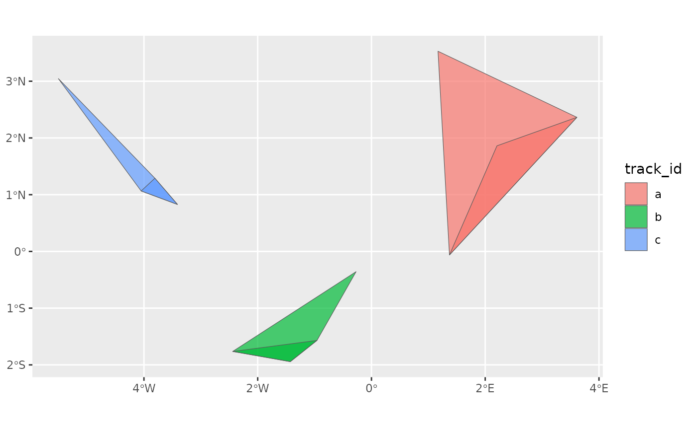

This function estimates the home range of an animal using the minimum convex polygon (MCP) method.
Usage
hr_mcp(x, levels = c(0.5, 0.95))Arguments
- x
A move2 object; if explicitly grouped, the home range is estimated for each group, combining all tracks within each group. Otherwise, the track id is used as grouping variable.
- levels
A vector of levels for the contour lines. The default is
c(0.5, 0.95), which corresponds to the 50% and 95% home ranges.
Value
A tibble of subclass hr_poly_tbl of results, with columns:
group_id: the ids from the grouping ofxlevel: the level of the contour linegeometry: the geometry of the home range as a list of sf polygons
Examples
example_mcp <- hr_mcp(example_tt)
example_mcp
#> Simple feature collection with 6 features and 4 fields
#> Geometry type: POLYGON
#> Dimension: XY
#> Bounding box: xmin: -5.5053 ymin: -1.9431 xmax: 3.6119 ymax: 3.5288
#> Geodetic CRS: WGS 84
#> # A tibble: 6 × 5
#> track_id method level area geometry
#> <chr> <chr> <dbl> [m^2] <POLYGON [°]>
#> 1 a mcp 0.95 52747834477. ((1.371 -0.0627, 1.1694 3.5288, 3.6119 2.3…
#> 2 a mcp 0.5 14105533708. ((1.371 -0.0627, 2.2065 1.8612, 3.6119 2.3…
#> 3 b mcp 0.95 13139194429. ((-0.9581 -1.5686, -1.427 -1.9431, -2.4405…
#> 4 b mcp 0.5 2865637069. ((-1.427 -1.9431, -2.4405 -1.7632, -0.9581…
#> 5 c mcp 0.95 6222600829. ((-3.8075 1.2897, -3.4103 0.8278, -4.0496 …
#> 6 c mcp 0.5 1241642121. ((-3.4103 0.8278, -4.0496 1.0655, -3.8075 …
library(ggplot2)
ggplot(example_mcp) +
geom_sf(aes(fill = track_id), alpha = 0.7)
